원자력기사 (2018-09-09 기출문제)
1과목: 원자력기초
1. 다음 중에서 렙톤(Lepton)에 속하는 입자가 아닌 것은?
- 중성미자(Neutrino)
- 전자(Electron)
- 양전자(Positron)
- 양성자(Proton)
(정답률: 알수없음)

2. 다음 중 용어와 단위가 맞게 연결된 것은?
- 중성자속(Neuron Flux, Φ) : 중성자수/cm3-sec
- 거시적 단면적(Macroscopic Cross Section, Σ) : cm-1
- 미시적 단면적(Microscopic Cross Section, σ) : cm-2
- 중성자류(Neutron current, J) : 중성자수/cm2
(정답률: 알수없음)
3. 최근 사회적으로 큰 이슈가 되고 있는 86Rn222의 양성자수, 중성자수 및 질량수는?
- 양성자수 : 86, 전자수 : 86, 중성자수 : 136, 질량수 : 222
- 양성자수 : 86, 전자수 : 136, 중성자수 : 86, 질량수 : 222
- 양성자수 : 136, 전자수 : 86, 중성자수 : 86, 질량수 : 222
- 양성자수 : 136, 전자수 : 136, 중성자수 : 86, 질량수 : 222
(정답률: 90%)
4. 다음 중 열중성자 이용률(Thermal Utilization Factor, f)이 증가하는 경우는?
- 핵연료 농축도 증가
- Xenon 농도의 증가
- 핵연료 연소도 증가
- 누설중성자의 증가
(정답률: 50%)
5. 동위원소(Isotope)와 동중원소(Isobar)에 대한 다음 설명 중 맞는 것은?
- 동중원소는 원자번호가 서로 같은 원소이다.
- 8O16, 8O17, 8O18은 서로 동위원소이다.
- 동위원소는 질량수가 서로 같은 원소이다.
- 동중핵변환(Isobaric Transition)으로는 알파붕괴(Alpha Decay)가 있다.
(정답률: 73%)
6. 핵력(Nuclear Force)에 대한 설명 중 맞는 것은?
- 핵력은 전자기력(쿨롱힘)보다 약하다.
- 매우 짧은 거리(10-15m 수준)에서 작용하는 힘이다.
- 원자핵속에서 중성자와 중성자 사이에 작용하는 힘은 중성자와 양성자간에 작용하는 힘보다 크다.
- 핵력은 전자기력과 마찬가지로 핵자 간에 서로 끌어당기거나 밀어내는 힘을 가진다
(정답률: 알수없음)
7. 마법수(Magic Number)에 대한 설명으로 다음 중 틀린 것은?
- 원자핵을 구성하고 있는 양성자의 수 또는 중성자의 수가 2, 6, 8, 14, 20, 28, 50, 82, 126일 때, 핵자들이 폐각(Closed Shell)을 형성하여 안정한 원자핵으로 존재할 수 있다.
- 원자핵의 액체방울모형(Liquid Drop Model)에서는 마법수를 이용하여 핵구조를 설명한다.
- 90Zr 원자핵속에는 중성자가 50개의 마법수로 존재하여 안정한 원자핵을 구성한다.
- 마법수를 가진 원자핵은 안정하여 중성자를 흡수할 확률이 낮기 때문에 피복재 재료로 널리 사용된다.
(정답률: 90%)
8. 중성자의 평균 자유 행정(Mean Free Path)에 대한 설명 중 옳지 않은 것은?
- 중성자가 진행하며 원자핵과 충돌을 일으킬 때 충돌하는 위치들 간의 평균 거리이다.
- 원자 밀도(Atomic Density)가 크면 평균 자유 행정이 길다.
- 표적에 입사한 중성자가 흡수되기 전에 산란하며 이동한 평균 거리와 관계가 있다.
- 거시적 단면적(Macroscopic Cross Section)에 반비례한다.
(정답률: 알수없음)
9. 도플러 효과(Doppler Effect) 및 도플러 확장(Doppler Broading)에 대한 설명으로 틀린 것은?
- 경수로의 즉발 온도계수(Prompt Temperature Coefficient)는 도플러 효과 때문에 음(-)의 값을 가진다.
- 중성자의 반응 단면적은 특정 에너지 영역에서 공명흡수 현상을 가진다
- 표적핵(Target Nucleus)의 질량에 따라 공명흡수 단면적의 분포 형태가 변화하는 현상을 도플러 확장이라 부른다.
- 도플러 효과로 인해 공명 영역의 형태는 변해도 공명 영역 곡선 아래 부분의 면적은 일정하다.
(정답률: 알수없음)
10. 다음 중 원자로 기동 불능시간(Reactor Dead Time)과 가장 밀접한 관계가 있는 핵종은?
- 135Xe
- 149Sm
- 10B
- 113Cd
(정답률: 알수없음)
11. 우라늄(235U)-중성자 핵반응에서 1MW-day의 열에너지를 얻기 위하여 필요한 235U의 양(g)은? (단, 우라늄(235U) 원자 한 개가 핵분열을 할 때 발생하는 열에너지는 190MeV이며, 235U의 원자량은 235로 가정한다.)
- 0.1 g
- 1.1 g
- 2.1 g
- 3.1 g
(정답률: 30%)
12. 액체금속냉각로(Liquid Metal Cooled Reactor)에 대한 설명으로 틀린 것은?
- 액체금속냉각로는 냉각재의 최고 온도가 경수로나 중수로에 비해 낮다
- 액체금속냉각로는 열전달 성능이 우수하면서도 중성자 감속을 잘 시키지 않는 액체금속이 냉각재로 적합하다
- 액체금속냉각로는 열효율이 경수로나 중수로에 비해 높다
- 액체금속냉각로는 냉각재 압력이 경수로나 중수로에 비해 낮다.
(정답률: 55%)
13. 물을 감속재 겸 반사체로 사용하는 구형(Spherical Shape) 235U 균질로의 임계 노심 반지름은 얼마인가? (단, 물의 밀도는 1g/cm3이며 이주면적(Migration Area) MT2=30.8cm2, 버클링(Buckling) B2 = 2.8X10-3 cm2)
- 53.1cm
- 59.4cm
- 61.3cm
- 1.07m
(정답률: 10%)
14. 다음 중 원자로에서 중성자의 누설을 줄일 수 있는 방법과 관련이 가장 적은 것은?
- 원자로 주위에 반사체(Reflector)를 설치한다
- 원자로의 직경과 높이를 크게 설계한다.
- 감속재(Moderator) 온도를 높인 상태에서 원자로를 운전한다.
- 신연료는 노심 안쪽에 장전하고, 연소된 연료는 노심 외곽에 장전한다.
(정답률: 82%)
15. 가압경수로의 특징에 대한 설명으로 맞지 않은 것은?(오류 신고가 접수된 문제입니다. 반드시 정답과 해설을 확인하시기 바랍니다.)
- 핵연료로 농축우라늄(2~5 wt%)을 사용한다.
- 원자로냉각계통인 1차계통과 증기 및 급수계통인 2차계통이 분리되어 있어 2차계통의 방사능 오염이 상대적으로 적다.
- 원자로 출력이 상승하면 감속재의 중성자 가속 능력은 저하된다.
- 원자로 상부에 여러 개의 안전밸브 및 압력방출밸브(PORV, Power-operated relief valve)가 있어 과압을 방지한다
(정답률: 59%)
16. 즉발임계(Prompt Critical) 상태의 원자로에 대한 설명으로 틀린 것은?
- 원자로 주기가 임계 상태의 원자로에 비해 길다.
- (1-β)k=1 이 성립한다.
- 즉발중성자 생성비율은 전체 핵분열 중성자의 1-β이다.
- 반응도(Reactivity, ρ)는 β와 같다.
(정답률: 알수없음)
17. 원자로의 반응도 특성 및 제어에 대한 설명으로 맞는 것은?
- 135Xe의 경우, 평형(Equilibrium)상태에서 수밀도(Number Density)값의 최대치가 달성된다.
- 평형상태에 도달한 I135와 149Sm의 수밀도는 중성자속(Neutron Flux)에 비례한다
- 화학적 독물질은 원자로 국부출력 분포를 조절함으로써 정지여유도 확보에 필요한 제어봉의 수를 감소시키는 장점이 있다.
- 제어봉은 원자로 내에 삽입되는 위치의 중성자속에 관계없이 일정한 제어봉 반응도 값(Control Rod Worth)을 가진다.
(정답률: 10%)
18. 원자로 형태에 따른 버클링(Buckling)에 대한 설명 중 맞는 것은?
- 원자로를 원통형으로 만드는 것은 원통형 원자로의 버클링이 가장 크기 때문이다.
- 직육면체형 원자로의 버클링이 원통형 원자로의 버클링보다 작다.
- 버클링은 원자로 형태보다 중성자의 에너지와 더 밀접한 관계가 있다.
- 구형 원자로는 버클링이 가장 작아 누설을 최소화할 수 있다.
(정답률: 46%)
19. 원자로 내에서 중성자의 특성과 반응률(Reaction Rate)에 대한 설명 중 맞지 않는 것은?
- 반응률은 ΣΦ로 나타낼 수 있다. 단, Σ : 거시적단면적, Φ : 중성자속
- 반응률은 단위체적, 단위시간에 일어나는 핵반응의 수를 나타낸다
- 속중성자속(Fast Neutron Flux)은 핵연료 내부에서 가장 낮고, 감속재에서 가장 높다
- 열외중성자(Epithermal Neutron)은 238U 및 240Pu와 공명흡수반응을 한다.
(정답률: 알수없음)
20. 중성자에 의한 핵분열이 일어나지 않는 매질에서 오른쪽 그림과 같이 동일한 세기의 중성자 점선원(S) 4개가 한 변의 길이 a인 정사각형의 네 꼭지점에 위치하고 있을 때, 어떤 한 변의 중점(P)에서 중성자류(Current)는? (단, 점선원에서 방출된 중성자는 등방성을 가지며, 중성자 확산거리는 L, 확산계수는 D이다.)
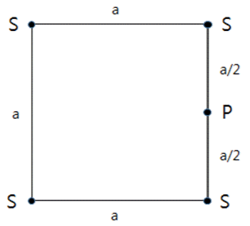
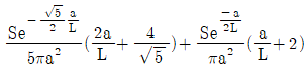
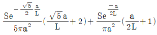
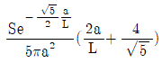
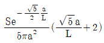
(정답률: 10%)
2과목: 핵재료공학 및 핵연료관리
21. 액체폐기물 처리공정이 여과기, 증발기, 혼상탈염기로 구성되어 있을 경우, A 핵종에 대한 처리공정의 총 제염계수는? (단, A 핵종에 대한 여과기의 제염계수는 5, 증발기는 100, 혼상탈염기는 10으로 가정)
- 50
- 500
- 5,000
- 10,000
(정답률: 40%)
22. 핵분열이 235U에 의해서만 일어난다고 가정했을 대 가동율 90%, 출력 1000 MWe, 열효율 30%인 원전에서 연간 핵분열을 일으키는 235U의 양은 몇 kg인가? (단, 1회의 핵분열시 200MeV의 에너지가 방출된다고 가정)
- 약 2.6 kg
- 약 392 kg
- 약 1.153 ton
- 약 1.431 ton
(정답률: 0%)
23. 90Sr(반감기 28.8년)과 90Y(반감기 64시간)이 방사 평형상태에 있다. 90Sr의 방사능이 1,000 Bq일 때 90Sr을 완전히 분리하여 32시간 경과 후 90Sr과 함께 존재하는 90Y의 방사능은 얼마인가?
- 약 100 Bq
- 약 300 Bq
- 약 500 Bq
- 약 600 Bq
(정답률: 알수없음)
24. 사용후핵연료 중간저장시설의 구조 및 설비 기준으로 옳지 않은 것은?
- 해일, 태풍, 홍수 또는 지진 등의 자연 현상에 의한 손괴로 인해 방사선작업자에게 방사선 장해 발생 방지
- 사용후핵연료가 붕괴열 등에 의해 용융되는 것을 방지할 수 있는 냉각능력 유지
- 사용후핵연료를 안전하게 취급하고 저장할 수 있는 방사선 차폐능력 유지
- 화재 또는 폭발 등이 발생한 경우에도 안전성유지
(정답률: 30%)
25. 중수로 핵연료 제조공정에 필요한 단계가 아닌 것은?
- 변환(Conversion)
- 재변환(Re-conversion)
- 정광(Milling)
- 정련(Refining)
(정답률: 알수없음)
26. 235U의 농축을 위해 UF6 기체분자를 이용한 기체확산법을 사용할 때 이론적인 분리계수는 얼마인가? (단, 235U의 질량수는 238, F의 질량수는 19로 가정)
- 1.004289
- 1.006363
- 1.008596
- 1.012766
(정답률: 알수없음)
27. 핵연료 피복관의 결함 여부를 알 수 있는 방법이 아닌 것은?
- 옥소 방사능 분석
- 지발 중성자 검출
- 중성자속 기울기 측정
- 코발트 방사능 분석
(정답률: 20%)
28. 사용후핵연료 중간저장시설의 핵심적인 안전요소로서 가장 거리가 먼 것은?
- 핵임계 방지
- 피복관 단열
- 방사선 차폐
- 방사성물질 격납
(정답률: 73%)
29. 우라늄 동위원소 분리방법에 대한 설명으로 틀린 것은?
- 전기분해 공정은 전력소모가 많으나 분리계수가 높아 우라늄 동위원소 분리공정에 많이 이용된다.
- 기체확산법은 분리계수가 거의 1에 가깝기 때문에 많은 단계의 케스케이드(Cascade) 작업이 필요하다.
- 노즐분리법은 원심력 차이를 이용한 분리 방법이다.
- 질량확산법은 동위원소 간 확산 속도차를 이용한 방법이다.
(정답률: 알수없음)
30. 가압경수로 원자로냉각재에 존재하는 방사성핵종의 생성 원인으로 옳지 않은 것은?
- 삼중수소의 주요 생성원은 B, Li, H 등의 중성자 반응과 삼중핵분열이다.
- 14C 생성의 대부분은 14N와의 (n,p) 반응이다.
- 방사성 부식 생성물은 일차냉각재계통의 금속 표면에서부터 유래한다.
- 16N 생성의 대부분은 16O과의 (n,p) 반응이다.
(정답률: 50%)
31. 금속재료의 부식 형태에 대한 설명 중 옳지 않은 것은?
- 점식(pitting)은 금속 표면의 부동태막(passive film)이 파괴된 좁은 부위에 집중적으로 부식이 진행되는 형태이다.
- 임계 부식(Intergranular corrosion)은 합금원소의 농도차이에 의해 생기는 결정립계와 기지(Matrix) 간의 전기 화학적 반응성의 차이로 발생한다.
- 응력 부식은 합금에서 응력이 존재하면 발생되는 부식으로, 합금의 종류에 관계없이 발생한다.
- 고온산화시 산화물 핵의 생성 속도는 금속 표면의 결함과 불순물 등에 따라 달라진다.
(정답률: 50%)
32. 방사성폐기물 자체처분 규정에 대한 설명 중 틀린 것은?
- 희석을 통해 허용농도를 만족시켜야 한다.
- 허용농도 미만일 때 자체처분할 수 있다.
- 허용선량을 만족할 때 자체 처분할 수 있다.
- 허용기준 만족시 방사선관리구역 외부 저장소에 임시로 저장할 수 있다.
(정답률: 60%)
33. 사용후핵연료 재처리전 물속에 저장했을 때 얻을 수 있는 효과가 아닌 것은?
- 기체 핵분열생성물 제거
- 방사능 감소
- 붕괴열 감소
- 재처리시 취급용이
(정답률: 50%)
34. 핵연료 소결체 제조공정이 아닌 것은?
- 균질혼합공정
- 소결공정
- 화학적 처리공정
- 연삭공정
(정답률: 40%)
35. 사용후핵연료의 재처리 목적이 아닌 것은?
- 유용한 핵분열성 물질 회수
- 방사성 핵분열생성물 제거
- 장기보관을 위해 사용후핵연료 중의 방사성물질을 안전한 형태로 변화
- 사용후핵연료의 방사능 감소
(정답률: 10%)
36. 금속핵연료의 장점에 대한 설명 중 틀린 것은?
- 나트륨(Na)과 반응하지 않는다.
- 재처리시 액체폐기물 발생량이 적다
- 높은 열전도도 특성으로 도플러 효과가 작아 반응도 제어가 용이하다
- 융점이 높아 기하학적으로 안정하다.
(정답률: 19%)
37. 핵연료 피복재에 대한 설명 중 틀린 것은?
- 피복재는 핵분열생성물에 의한 화학적 반응 및 변형에 대한 저항성을 가져야 한다.
- 펠렛과 냉각재를 직접 접촉시켜 열전도율을 향상시킨다.
- 냉각재 압력 및 유체역학적 응력에 견디어야 한다.
- 냉각재에 의한 화학적 반응에 견디어야 한다.
(정답률: 60%)
38. 다음 중 사용후핵연료 건식저장방법이 아닌 것은?
- 금속용기(Cask)
- 콘크리트 용기(사일로)
- 볼트(Vault)
- 고건전성 용기(HIC)
(정답률: 28%)
39. 초우라늄원소(Transuranium)와 마이너액티나이드(Minor Actinide)에 동시에 해당되는 핵종은?
- 크로뮴(Cr)
- 플루토늄(Pu)
- 아메리슘(Am)
- 버클륨(Bk)
(정답률: 30%)
40. 액체방사성폐기물 처리방법 중 제염계수가 가장 높은 것은?
- 응집침전법
- 이온교환법
- 일시저장법
- 증발법
(정답률: 60%)
3과목: 발전로계통공학
41. 일반적으로 원자력발전소의 열효율을 증대시키기 위한 방안이 아닌 것은?
- 터빈으로 유입되는 증기를 고온으로 가열한다.
- 저압터빈 전단에 습분분리 및 재열기를 설치한다.
- 급수가열기를 통해 증기발생기로 공급되는 주급수를 가열한다.
- 복수기 내의 증기압을 가능한 높게 유지한다.
(정답률: 알수없음)
42. 원형 배관 내부를 흐르는 레이놀즈(Re) 수를 구할 때 필요한 값이 아닌 것은?
- 배관의 길이
- 배관의 직경
- 유체의 점성계수
- 유체의 속도
(정답률: 60%)
43. 내부 직경이 10cm인 원형 배관에 물이 5m/sec 속도로 20m를 지나갈 때 수두손실은 얼마인가? 9단, 배관의 마찰계수(f)는 0.016이다.)
- 0.04m
- 1.24m
- 4.08m
- 8.16m
(정답률: 알수없음)
44. 핵분열 시 생성되는 에너지 중 가장 큰 비율을 차지하는 것은?
- 핵분열과 동시에 발생하는 고속중성자의 운동에너지
- 핵분열과 동시에 발생하는 핵분열생성물의 운동에너지
- 핵분열과 동시에 발생하는 감마선
- 핵분열생성물의 붕괴로부터 발생하는 에너지
(정답률: 60%)
45. 물질의 무질서도를 나타내는 열역학적 개념은?
- 엔탈피
- 내부에너지
- 엔트로피
- 온도
(정답률: 62%)
46. 온도가 107℃이고 압력이 500kPa인 물이 주급수펌프로 유입될 때 펌프 입구에서 유효흡입수두(NPSH)는 얼마인가? (단, 유입되는 물의 밀도는 953.1 kg/m3, 107℃에서 물의 포화압력은 129.4kPa이다.)
- 12.1m
- 39.7m
- 53.5m
- 88.8m
(정답률: 알수없음)
47. 원자력발전소 핵연료봉의 열전달 특성에 대한 설명 중 틀린 것은?
- 펠렛(Pellet)에서 온도 구배보다 피복재에서 온도 구배가 더 크다
- 핵연료봉 표면에서 열전달 유형은 핵비등이다.
- 펠렛 내부에서 열전달 유형은 열전도이다.
- 연소가 진행됨에 따라 펠렛에서 열전도는 감소한다.
(정답률: 알수없음)
48. 다음은 증기 사이클에 대한 이상적인 TS 선도를 나타낸 것이다. 각 위치에서 상태로 옳지 않은 것은?
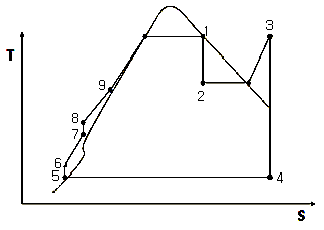
- 위치 1 : 포화증기
- 위치 2 : 습증기
- 위치 3 : 과열증기
- 위치 4 : 물
(정답률: 알수없음)
49. 한국표준형 원자력발전소의 공학적안전설비가 아닌 것은?
- 원자로격납건물
- 원자로보호계통
- 보조급수계통
- 비상노심냉각계통
(정답률: 알수없음)
50. 원자로냉각재압력경계에서 배관파단에 의한 냉각재상실사고의 징후가 아닌 것은?
- 주급수유량의 증가
- 원자로냉각재 온도의 포화온도 접근
- 원자로격납건물 재순환집수조 수위 증가
- 가압기 압력 감소
(정답률: 10%)
51. 정지된 액체 속에 잠겨있는 가열면에서 풀 비등(Pool Boiling)이 발생할 때 가장 효율적인 열전달 영역은?
- 자연대류 영역
- 핵비등 영역
- 천이비등 영역
- 막비등 영역
(정답률: 50%)
52. 핵연료봉 표면에서 임계열유속을 qs,crit라 하고 핵연료봉 표면에서 실제 열유속을 qs,act라 할 때, 핵비등이탈률(Departure from Nuclear Boiling Ratio, DNBR)의 정의식으로 바른 것은?
- DNBR=qs,crit/qs,act
- DNBR=qs,act/qs,crit
- DNBR=1-qs,crit/qs,act
- DNBR=1-qs,act/qs,crit
(정답률: 64%)
53. 가압경수로형 원자력발전소 증기발생기에 대한 설명으로 틀린 것은?
- 주증기파단사고시 증기유량을 억제하기 위해 증기발생기 출구 노즐에 증기유량 제한장치를 설치한다.
- 증기발생기 내 진동을 방지하기 위해 유량 순환비는 가능한 작게 설계한다
- 터빈으로 방출되는 습분을 제거하기 위해 상부에 습분분리기를 설치한다.
- 불순물 농축에 의한 부식을 방지하기 위해 유체가 정체되는 지역이 최소화 되도록 설계한다.
(정답률: 알수없음)
54. 우리나라 원자력발전소에 대한 설명 중 틀린 것은?
- 가압중수로형에서 냉각재의 중수농도는 감속재의 중수농도보다 높다
- 가압중수로형은 사고 시 원자로 건물 상부의 다우징 탱크에서 냉각수를 원자로에 공급한다.
- 가압경수로형은 감속재와 냉각재로 경수를 사용한다.
- 가압경수로형의 원자로격납건물 안쪽에 설치된 철판은 방사성물질의 누설을 방지한다.
(정답률: 알수없음)
55. 한국표준형 원자력발전소 화학 및 체적제어계통의 기능에 대한 설명 중 틀린 것은?
- 원자로냉각재펌프의 밀봉수 공급
- 원자로냉각재의 붕산농도 조절
- 원자로냉각재계통의 수압시험 수단 제공
- 안전주입계통 동작시 고압안전주입 유량 제공
(정답률: 55%)
56. 원자력발전소에서 방사성물질의 외부 유출을 방지하기 위한 4개의 물리적 방벽에 속하지 않는 것은?
- 핵연료피복재
- 원자로냉각재계통
- 원자로격납건물
- 사용후핵연료저장조
(정답률: 64%)
57. 가압경수로형 원자력발전소의 냉각재로서 요구되는 특성이 아닌 것은?
- 중성자 흡수가 적을 것
- 높은 점성을 가질 것
- 재료에 대한 부식성이 적을 것
- 열전달이 우수할 것
(정답률: 알수없음)
58. 원자력발전소 운영 중 가압열충격(Pressurized Thermal Shock, PTS) 사고를 야기할 수 있는 조건이 아닌 것은?
- 소형 냉각재 상실
- 열제거원 상실
- 2차측 증기배관 파단
- 원자로격납건물 압력 상승
(정답률: 알수없음)
59. 원자로냉각재상실사고에 따른 비상노심냉각계통의 성능에 관한 허용기준이 아닌 것은?
- 핵연료피복재의 최고 온도는 1204C를 초과하지 않아야 한다.
- 핵연료피복재의 산화도는 어느 부분에서도 산화되기 이전 피복재 두께의 17%를 초과하지 않아야 한다.
- 핵연료피복재에서 생성되는 수소량은 피복재 이외의 부품에서 생성될 수 있는 총 수소량의 10%를 초과하지 않아야 한다.
- 노심은 냉각이 가능한 기하학적 형상을 유지해야 하며, 장기간 노심을 충분히 낮은 온도로 유지할 수 있어야 한다.
(정답률: 알수없음)
60. 아래 그림과 같이 두 개의 평판이 겹쳐있을 때, 단위면적당 열전달량은? (여기서 알루미늄의 열전도율(Thermal Conductivity)은 k = 200 W/m-C이며, 니켈합금의 열전도율은 k = 20 W/m-C로 가정한다.)
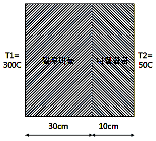
- 9,827 W/m2
- 13,102 W/m2
- 19,654 W/m2
- 38,462 W/m2
(정답률: 0%)
4과목: 원자로 안전과 운전
61. 가압경수로형 원자력발전소 원자로 내에 가연성 독물질봉(Burnable Poison Rod)을 연료와 같이 장전한다. 가연성 독물질봉을 장전하는 목적으로 틀린 것은?
- 임계질량보다 많은 연료의 장전으로 인한 잉여반응도(Excess Reactivity) 보상
- 노심의 반경방향 출력분포를 균일하게 유지
- 출력변화 시 제논(Xe) 농도 변화에 따른 반응도 보상
- 노심초기 수용성 붕소농도를 과도하게 높지 않도록 유지
(정답률: 42%)
62. 다음 중 가압경수로형 원자력발전소의 원자로 운전 시 긴급 붕산주입을 해야 하는 상황이 아닌 것은?
- 원자로 정지 시 제어봉이 완전히 삽입되지 않을 경우
- 제어봉이 삽입 제한치 이상 위치할 경우
- 정상 붕산수 보충계통 고장으로 붕산수 주입이 불가능할 경우
- 원자로 정지 후 정지여유도 불만족 시
(정답률: 70%)
63. 원자력발전소 일반 설계기준에는 발전소 보호계통의 설계요건을 규정하고 있다. 다음 설명에 해당하는 것은?
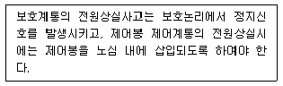
- 다중성(Redundancy)
- 안전 정지(Fail to Safe)
- 다양성(Diversity)
- 시험성(Testability)
(정답률: 알수없음)
64. 원자로를 100% 출력으로 운전(Xe 농도 평형)하다가 출력을 감소시켜 50% 출력으로 안정상태로 유지하고 있다. 이 때 원자로 내부의 제논(Xe135) 농도변화에 대하여 바르게 설명한 것은?
- 출력 감소와 관계없이 일정 농도 유지
- 출력 감소와 동시에 감소하여 초기 출력 때보다 높은 농도에서 안정
- 출력 감소와 동시에 감소하여 초기 출력 때보다 낮은 농도에서 안정
- 출력 감소 후 잠시 제논농도가 증가했다가 초기 출력 때보다 낮은 농도에서 안정
(정답률: 75%)
65. 다음 각 원자로에 대한 설명 중 옳지 않은 것은?
- 가압경수로는 냉각재와 감속재로 경수를 사용하며, 1차 계통과 2차 계통으로 나뉘어 있어 방사선방호에 유리하다.
- 가압중수로는 냉각재와 감속재로 중수를 사용하며, 핵연료로 저농축 우라늄을 사용한다.
- 비등경수로(BWR)는 냉각재와 감속재로 경수를 사용하며, 원자로에서 생산된 증기가 직접 터빈으로 공급되어 1차 계통과 2차 계통이 나뉘어 있지 않다.
- 액체금속 고속증식로(LMFBR)은 냉각재와 감속재로 나트륨을 사용하며, 현재 상업 운전 중인 원전은 없다.
(정답률: 55%)
66. 원자로가 미임계 상태에서 중성자 계수율은 500 cps, Keff는 0.90으로 유지 중이다. 제어봉을 인출하였더니 Keff가 0.96으로 변경되었다. 이 때 중성자 계수율은 얼마인가?
- 750 cps
- 1000 cps
- 1250 cps
- 1500 cps
(정답률: 10%)
67. 가압경수로형 원자력발전소에서 출력운전 중 다음의 비정상 상황에서 원자로 출력이 증가하는 경우는?
- 주급수유량 제어밸브 비정상 개방
- 터빈제어밸브 비정상 닫힘
- 제어봉 삽입
- 주급수펌프 정지
(정답률: 알수없음)
68. 가압경수로형 원자력발전소에서 증기발생기 튜브 파단(SGTR) 사고 발생 시 증상으로 틀린 것은?
- 손상된 증기발생기 수위 증가
- 가압기 수위 및 압력 감소
- 격납건물 온도 및 압력증가
- 복수기 배기구 방사선량 증가
(정답률: 알수없음)
69. 다음 중 원자로냉각재계통의 과냉각 여유도(Subcooling Margin)을 감소시키는 사고의 종류로 틀린 것은?
- 원자로냉각재 압력이 일정하고, 온도가 감소할 경우
- 원자로냉각재 압력이 일정하고, 온도가 증가할 경우
- 원자로냉각재 압력이 감소하고, 온도가 일정할 경우
- 원자로냉각재 압력이 감소하고, 온도가 증가할 경우
(정답률: 60%)
70. 현재 원자로 출력이 10kW이고 기동율이 0.5 DPM일 때 4분 후의 출력으로 맞는 것은?
- 1,000 kW
- 1,500 kW
- 2,000 kW
- 2,500 kW
(정답률: 20%)
71. 핵연료 장전 방법의 하나인 저누설 장전방식(Low Leakage Loading Pattern)의 장점이 아닌 것은?
- 핵연료의 연소도 증가
- 중성자 이용률 증가
- 반경방향 중성자속 평탄화
- 원자로용기의 피로현상 감소
(정답률: 40%)
72. 원자로에 88톤의 연료를 장전 후 전기출력 1,⑤0 MWe로 400일간 운전하였을 때 평균 연소도로 맞는 것은? (단, 발전소 효율은 40%로 가정한다.)
- 약 10,932 MWD/MTU
- 약 11,432 MWD/MTU
- 약 11,932 MWD/MTU
- 약 12,432 MWD/MTU
(정답률: 알수없음)
73. 다음 중 가압경수로형 원자력발전소의 핵연료봉 내에 헬륨(He) 기체를 가압하여 충전하는 이유로 적합하지 않은 것은?
- 피복재의 크리프(Creep) 현상을 방지하기 위해
- 피복재가 외압에 의해 찌그러드는 것을 방지하기 위해
- 연료봉 내부의 열전달을 향상시키기 위해
- 정상운전 중 핵연료의 손상을 확인하기 위해
(정답률: 77%)
74. 다음 중 심층방어(Defense in Depth)의 목표가 아닌 것은?
- 발전소의 안정적인 출력 운전 유지
- 잠재적인 인적실수 및 기기 고장에 대처
- 물리적 다중방벽의 건전성 유지
- 대중과 환경을 재해로부터 보호
(정답률: 70%)
75. 가압경수로형 원자력발전소의 예상임계점 계산 시 고려하는 반응도 인자가 아닌 것은?
- 제어봉 반응도 결손
- 노심 연소도
- 붕소 농도에 따른 반응도 결손
- Xe 결손
(정답률: 알수없음)
76. 가압경수로형 원자력발전소에서 운전원이 노심의 반응도를 제어할 수 있는 수단 중 제어봉에 대한 설명으로 틀린 것은?
- 출력결손을 보상하기 위한 단기 반응도 제어 수단
- 연료 연소, Xe, Sm 등 독물질 생성과 감소에 따른 반응도 보상
- 삽입 및 인출한계 설정으로 축방향/반경방향 중성자속 분포 제어
- 원자로이 정지여유도 확보 수단
(정답률: 46%)
77. 가압경수로형 원자력발전소에서 원자로냉각재 상실사고(LOCA) 발생시 원자로냉각재펌프를 계속 운전할 경우 장점으로 틀린 것은?
- 가압기 정상살수를 통한 원자로냉각재계통 압력제어 수단 제공
- 냉각재 강제 순환으로 증기발생기를 통한 열제거 능력 확보
- 원자로용기 내 하향 유로와 하부 공동관에서 냉각재의 혼합으로 가압 열충격 완화
- 파열부위를 통한 냉각재 방출에 따른 원자로냉각재계통 압력강하로 안전주입 유량 증가
(정답률: 46%)
78. 원자력 안전문화(IAEA INSAG-4, 1991)의 구성요소는 정책, 관리자 및 개인 차원의 3가지이다. 다음 중 개인 차원의 세부적인 요소로 틀린 것은?
- 의문을 제기하는 태도
- 정확하고 신중한 업무접근 방법
- 안전업무 규정 및 관리
- 커뮤니케이션
(정답률: 19%)
79. 일본 후쿠시마 원전사고 이후 국내에서 다수의 후쿠시마 후속조치 사항을 추진하였다. 다음 중 국내 원자력발전소의 후쿠시마 후속조치사항이 아닌 것은?
- 대체교류발전기(AAC D/G) 설치
- 이동형 발전차량 및 축전지 확보
- 피동촉매형 수소재결합기(PAR) 설치
- 지진 자동정지설비(ASTS) 설치
(정답률: 60%)
80. 중대사고 발생시 원자로용기 내부에서 발생할 수 있는 현상이 아닌 것은?
- 노심용융진행(Core Melt Progression)
- 증기폭발(Steam Explosion)
- 노심용융물 냉각수 반응(Fuel Coolant Interaction)
- 고압용융물 분출(High Pressure Melt Ejection)
(정답률: 55%)
5과목: 방사선이용 및 보건물리
81. 다음 중 방사성 핵종의 비방사능(Specific Activity)을 나타내는 식은? (단, A는 핵종의 원자량, T는 반감기, k는 상수)
- kAT
- kAT2
- kA/T
- k/AT
(정답률: 40%)
82. 아래의 방사선 중 연속 스펙트럼의 에너지를 가지는 것은 모두 몇 개인가?
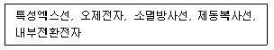
- 1개
- 2개
- 3개
- 4개
(정답률: 20%)
83. 다음 중 중성자 차폐체와 감마선 차폐체에 대한 설명으로 옳은 것은?
- 중성자 차폐체는 경원소 물질, 감마선 차폐체는 중원소 물질이 효과적이다.
- 중성자 차폐체는 중원소 물질, 감마선 차폐체는 경원소 물질이 효과적이다.
- 중성자나 감마선 모두 경원소 물질로 된 차폐체를 사용하는 것이 효과적이다.
- 중성자나 감마선 모두 중원소 물질로 된 차폐체를 사용하는 것이 효과적이다.
(정답률: 50%)
84. 기체봉입형검출기의 전압과 집적전하량과의 관계에서 전리함 영역이 평탄한 이유는?
- 입사 방사선량이 일정하기 때문이다.
- 입사 방사선의 에너지가 일정하기 때문이다.
- 전리함 내에 생성된 전자의 증배계수가 전압변동 만큼 보상되기 때문이다.
- 인가전압의 증가에 따라 수집되는 이온쌍의 수는 거의 변하지 않기 때문이다.
(정답률: 28%)
85. 다음 중 결정론적 영향(Deterministic Effect)에 해당하는 것은?
- 고형암
- 백내장
- 백혈병
- 유전결함
(정답률: 60%)
86. 어떤 핵종의 연간섭취한도(ALI)가 6X105 Bq일 때, 이 핵종의 유도공기중농도(DAC)는 얼마인가? (단, 작업자의 연간 작업시간은 2,000시간이고, 평균 호흡률은 1.2m3/hr이다.)
- 250Bq/m3
- 500Bq/m3
- 2,500Bq/m3
- 5,000Bq/m3
(정답률: 알수없음)
87. 에너지가 100 keV 미만인 광자와 물질과의 상호작용에 대한 설명으로 옳은 것은?
- 광전효과, 컴프턴 산란, 전자쌍생성 반응이 발생할 수 있다.
- 광자의 에너지가 증가함에 따라 광전효과가 발생할 확률이 증가한다.
- 물질의 원자번호가 증가함에 따라 광전효과가 발생할 확률이 증가한다.
- 광자가 주로 원자핵과 가까운 궤도 전자와 상호작용하여 컴프턴 산란을 일으킨다.
(정답률: 37%)
88. 현재 전체 방사능이 10%를 A 핵종이 차지하고, 나머지 90%를 B 핵종이 차지하고 있다. 30일이 지난 시점에서 A 핵종의 방사능은 전체 방사능의 얼마인가? (단, A핵종의 반감기는 13일이며, B핵종의 반감기는 7일이다.)
- 약 3%
- 약 30%
- 약 70%
- 약 97%
(정답률: 알수없음)
89. 용해성 방사성 물질은 체내에서 주로 어떤 경로를 통해 제거되는가?
- 땀
- 대변
- 호흡
- 소변
(정답률: 75%)
90. 작업자가 오염된 지역에서 60Co 핵종을 1.5X106 Bq을 흡입하였다. 종사자의 예탁유효선량은? (단, 60Co 핵종에 대한 연간섭취한도(ALI)는 3.0X106 Bq이다.)
- 4mSv
- 10mSv
- 25mSv
- 40mSv
(정답률: 17%)
91. 작업장의 공기가 유도공기중농도(DAC)의 40배 수준으로 오염되었고, 동일 작업장에서의 외부피폭 방사선량률은 0.4mSv/hr로 측정되었다. 작업자가 방호인자 10인 반면마스크를 착용하고 5시간 작업하였다다면 작업자의 총 피폭방사선량은?
- 2.2mSv
- 2.5mSv
- 4.0mSv
- 25mSv
(정답률: 20%)
92. 방사선 감수성이 가장 높은 피부 조직은?
- 각질층(Horny Layer)
- 표피층(Epidermal Layer)
- 지방세포(Fat cells)
- 기저세포층(Basal cell layer)
(정답률: 60%)
93. 아래의 선원 취급방법 중 옳은 것은 모두 몇 개인가?
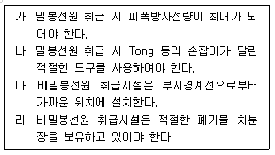
- 1개
- 2개
- 3개
- 4개
(정답률: 40%)
94. 다음 중 괄호 안에 들어갈 수 있는 것으로 옳은 것은?
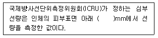
- 0.07
- 0.7
- 1
- 10
(정답률: 20%)
95. 화학선량계에서 물질의 화학적 변화량을 나타내는 G값(G-Value)에 대한 정의로 옳은 것은?
- 방사선 에너지 10eV 흡수당 생성되는 변화 수
- 방사선 에너지 100eV 흡수당 생성되는 변화 수
- 방사선 에너지 1keV 흡수당 생성되는 변화 수
- 방사선 에너지 1MeV 흡수당 생성되는 변화 수
(정답률: 알수없음)
96. GM 계수관에 대한 설명으로 옳은 것은?
- GM계수관은 알파선과 베타선의 분리측정에 용이하다.
- GM계수관의 불감시간은 다른 계측기에 비해 상대적으로 짧다
- 플레토우의 경사율이 클수록 양호한 GM계수관이다.
- GM계측기의 전기장 내에서 전자 이동속도는 양이온의 이동속도보다 대략 1000배 정도 빠르다.
(정답률: 알수없음)
97. 다음 중 섬광체와 주요 용도의 관계가 옳지 않은 것은?
- NaI(Tl) - 감마선 측정
- CsI(Tl) - 감마선 측정
- LiI(Eu) - 알파선 측정
- ZnS(Ag) - 알파선 측정
(정답률: 알수없음)
98. 납에 대한 어떤 감마선의 선형감쇠계수(μ)가 0.43cm-1일 때, 이 감마선의 세기를 1/16으로 감소시키는데 필요한 납의 두께는 약 얼마인가?
- 4.45cm
- 5.45cm
- 6.45cm
- 7.45cm
(정답률: 10%)
99. 계측기를 이용하여 10분 동안 방사성 시료를 계측하여 400 counts를 얻었고, 백그라운드를 20분간 계측하여 400couts를 얻었다. 이 시료에 대한 순계수율의 표준편차는 약 얼마인가?
- 2.236 cpm
- 2.834 cpm
- 3.383 cpm
- 4.472 cpm
(정답률: 20%)
100. 다음 그림은 137Cs 감마선에 대한 NaI(Tl) 섬광계수관의 파고분포이다. 에너지 분해능은 약 얼마인가?
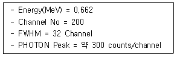
- 4.8 %
- 7.6 %
- 11.5 %
- 42.3 %
(정답률: 10%)